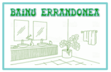
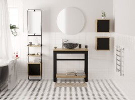
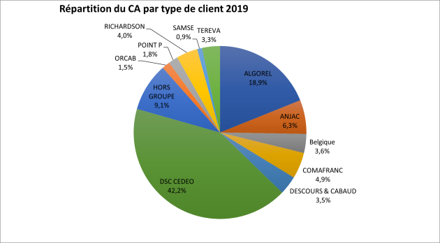
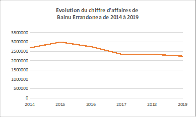
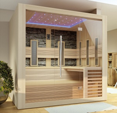

Bainu Errandonea
Mise en situation

BAINU ERRANDONEA
Zone artisanale Frédéric 2
64100 Bayonne
05 59 26 76 76
@ contact@bainuerrandonea.com
Activité
L’entreprise Bainu Errandonea a pour activité le commerce de gros (commerce interentreprises) de meubles, de tapis et d'appareils d'éclairage. Elle conçoit et commercialise des ameublements de salle de bain avec vasques et des ensembles de saunas.
Elle compte 8 salariés (1 agent d’entretien, 1 magasinier, 2 assistantes ADV/SAV, une gestionnaire d’achat et logistique, 1 responsable administratif comptable, 2 commerciaux). 4 agents commerciaux indépendants assurent la représentation commerciale de l’entreprise sur toute la France.
Produits
Les produits proposés sont les meubles de salle de bain en bois massif (teck, mindi, chêne et hemlock) qui se déclinent en 19 collections, des vasques et plans vasques, les saunas. L’ensemble des produits sont visibles au show room qui se situe dans les locaux de l’entreprise. Des échantillons de bois peuvent être envoyés au client sur leur demande.
Les ameublements de salle de bain sont fabriqués majoritairement en Indonésie et une partie en Chine.
La zone de chalandise de Bainu Errandonea est nationale (France) mais elle commence à se développer au niveau européen et notamment en Belgique.

Clientèle
Sa clientèle est exclusivement composée de professionnels dans le commerce sanitaire comme les entreprises du type CEDEO, BROSSETTE, POINT P …

Chiffre d’affaires
Pour l’année 2019, Le chiffre d’affaires de l’entreprise s’élève à environ 2,2 millions d’euros. Depuis 2014, ce chiffre d’affaires connait une évolution négative.
Ces performances commerciales sont globalement conformes aux tendances du marché de meubles de salle de bain, sauf pour l’année 2019.

2014/2015 | 2015/2016 | 2016/2017 | 2017/2018 | 2018/2019 |
|---|---|---|---|---|
-3,5% | -4,2% | -2,2 % | -2,7% | +1,3% |
Fournisseurs
Les fournisseurs sont qualifiés par Manuel Errandonea, le dirigeant de l’entreprise. Il a choisi de travailler avec des fournisseurs européens ainsi qu’avec des sous-traitants indonésiens, chinois et français. Les meubles sont achetés déjà montés, mais les produits sont conçus en France.
Les principaux fournisseurs sont : Anavil (meubles : collection DOMINO, ELITE, VAGUE DU NORD/ VAGUE DU SUD, HEMISPHERE...), Woodexindoo, Maximindoo, Cankis Hardware Co Ltd, Diam.
Politique commerciale
La politique commerciale de Bainu Errandonea est basée sur la qualité du produit car les meubles sont conçus en bois massif de haute qualité avec une garantie de 2 ans et répondant aux exigences de l’UE en matière d’importation de bois exploités de manière légale et raisonnée. Un service après-vente a récemment été mis en place pour garantir une qualité de service optimale afin que le client soit le plus satisfait possible.
Manuel ERRANDONEA valorise l’innovation du produit plutôt que son prix.
En 2015, il a choisi de développer un nouveau segment relevant du marché du « Bien-être » en commercialisant des saunas. Il a tout d’abord proposé des modèles de saunas traditionnels (poêle électrique, pierre de lave) dans la phase de lancement du produit, puis pour se différencier des concurrents, il a fait évoluer le produit en proposant des saunas infrarouges plus innovants intégrant l’écoute de musique via port USB ou Bluetooth, FM, éclairage intérieur/extérieur, température réglable.

Politique de prix
Manuel ERRANDONEA pratique une politique d’écrémage, les prix sont élevés car les produits sont réalisés avec des matériaux nobles et des bois de qualité (chêne, teck, teck recyclé, mindi, hemlock) provenant exclusivement de forêts gérées et encadrées par la norme UE avec des designs originaux.
Les tarifs sont différenciés selon les catégories de clientèle. Ainsi, des accords commerciaux précisent des conditions tarifaires spécifiques de catégorie clientèle : remise commerciale de 40% pour DSC CEDEO et de 25% pour le groupe ALGOREL.
Votre fonction
Vous êtes en stage au sein de BAINU ERRANDONEA depuis trois semaines. Vous avez mené des missions de gestion de la relation clientèle auprès des deux salariés affectés à l’administration des ventes/service après-vente. Ces trois semaines de stage vous ont permis de comprendre le contexte de l’entreprise et son environnement, vous maîtrisez l’ensemble du processus de vente et vous êtes à présent en capacité d’accueillir les clients, de répondre à leur demande, qui se font le plus souvent par téléphone ou par e-mail, concernant les produits ou encore leur commande.